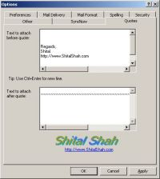

Outlook Quote Plugin
[Click To Enlarge]
So What's This All About
This is an add-in (i.e. plug in) for Microsoft Outlook which would automatically insert a random quote at the end of your email alone with your signature.
This add-in also gives you ability to read your email in synthesized voice to you so that you can "hear" your email while working on something else!
How Can I Get It?
Download the installer, install it and have fun!
Who did it?
This is Shital Shah, 26 living in Fairfield, NJ, USA. Visit my web site at http://www.ShitalShah.com.
Source Code
This program comes with Source Code. It's freeware an distributed under GPL. To download only source code click here.
Revenge With Vengence
Unix users have taken for granted automatic insertion of a random quote-of-the-day in their emails since ages and that's something Windows users still can't do with their brilliant Ver. 10 of Microsoft Outlook. The situation usually gets unnoticed until you start getting those emails with quotes from a Linux guy and you find yourself incapable of "responding" with the similar cream-at-the-bottom. That was yesterday, however. The Outlook Quote is the cool answer to the quest and it does it all and more. It has very elegant user interface, extensibility, ease of use, ease of installation and complete seamless integration with Outlook.